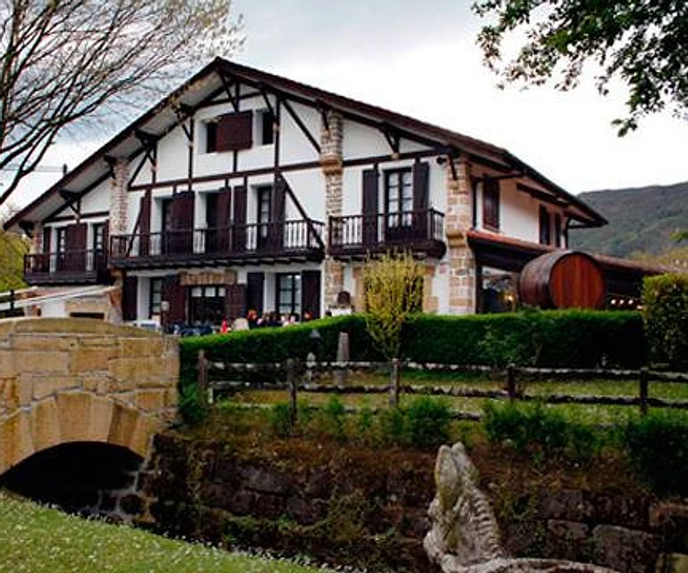
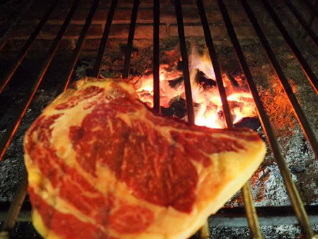
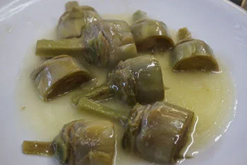
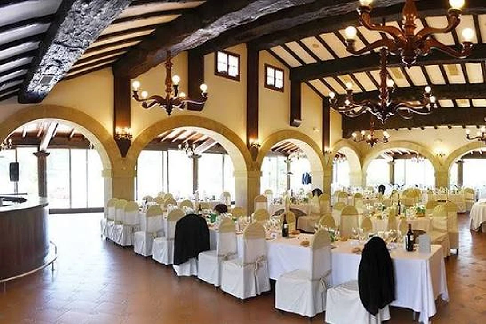
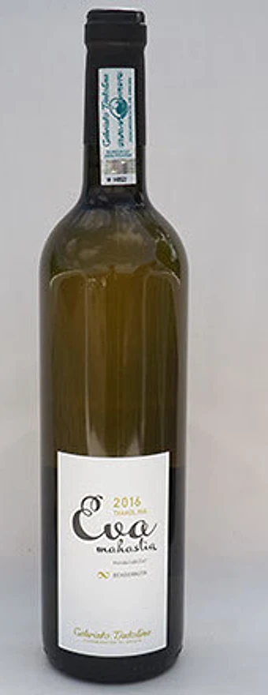
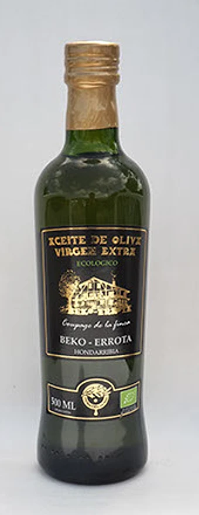

Beko Errota es un restaurante familiar del barrio Jaizubia, en Hondarribia. Está en un viejo molino que la familia reformó a principios de los años 80 y que desde entonces no ha dejado de crecer: hoy tiene cinco comedores, un jardín con estanque y fuentes, y viñedos y olivos de los que salen su txakoli, su sidra y su aceite.


Qué se come
Pescados frescos y carnes a la parrilla, mariscos, verduras de temporada y la txuleta de la casa. La carta cambia según el mercado.
- Menú del día
- 35 €
- Menú de la casa
- 43 €
El menú del día se sirve de martes a viernes a mediodía, salvo festivos, con cuatro primeros y cuatro segundos a elegir, postre, vino y café. IVA incluido. Menús de grupo desde 6 personas, con reserva previa.
Ver la carta completa


Bodas y eventos
Para una boda: lunch en el jardín, banquete y recena de pintxos. Para un evento o un congreso: cinco comedores que se combinan, con capacidad hasta 750 comensales.




De la finca
El txakoli Eva Mahastia, de uva Hondarribi zuri, la sidra de sus manzanas y un aceite virgen extra de unos quinientos olivos, recogidos a mano.
Ver los productosReservas
Para una mesa, un grupo, una boda o un evento, llamad o escribid.